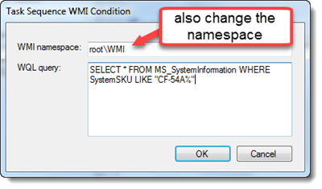
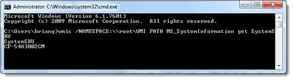
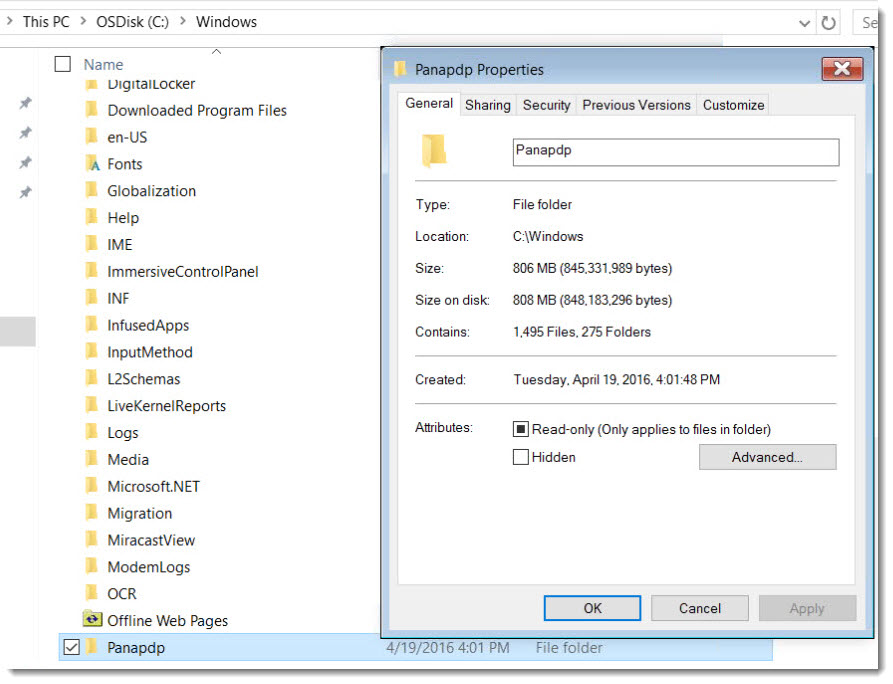
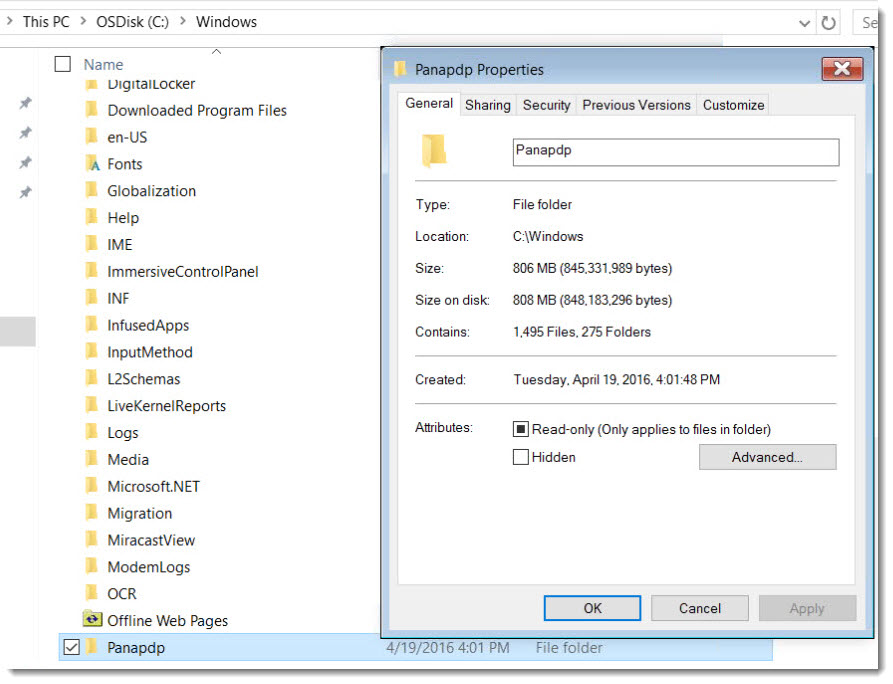

All Windows 10 packages support labeled version plus 2 previous versions

SELECT * FROM MS_SystemInformation WHERE SystemSKU LIKE "CF-54A%"
wmic /NAMESPACE:\\root\WMI PATH MS_SystemInformation get SystemSKU
If using outside of Microsoft Deployment Toolkit, use the following command to extract the CAB to a folder:

expand -f:* PDP_G1mk3_Win8.1x64_V4.01L10M12.cab . The CAB installers leave behind all drivers and applications installed. If you wish to purge these files, delete the C:\Windows\PanaPDP folder upon FirstLogon.

rd /s /q C:\Windows\PanaPDP
- Kernel-Mode Driver Framework (KMDF) version 1.11 (KB2685811)
https://www.microsoft.com/en-us/download/details.aspx?id=38423
- User-Mode Driver Framework (UMDF) version 1.11 (KB2685813)
https://www.microsoft.com/en-us/download/details.aspx?id=38421
- SHA-2 Code Signing Support / Security Update (KB3033929)
32bit: https://www.microsoft.com/en-us/download/details.aspx?id=46078
64bit: https://www.microsoft.com/en-us/download/details.aspx?id=46148
https://www.microsoft.com/en-us/download/details.aspx?id=38423
- User-Mode Driver Framework (UMDF) version 1.11 (KB2685813)
https://www.microsoft.com/en-us/download/details.aspx?id=38421
- SHA-2 Code Signing Support / Security Update (KB3033929)
32bit: https://www.microsoft.com/en-us/download/details.aspx?id=46078
64bit: https://www.microsoft.com/en-us/download/details.aspx?id=46148
Windows PE driver details: https://drive.google.com/open?id=0B7KIqGbVsDF9dExaUW5PakNJU2s
Windows 10.x: https://drive.google.com/open?id=0B7KIqGbVsDF9Q0VXSWpwd0lmZnc
Windows 5.x: https://drive.google.com/open?id=0B7KIqGbVsDF9Ukc0WU5OY3prTFk
Windows 10.x: https://drive.google.com/open?id=0B7KIqGbVsDF9Q0VXSWpwd0lmZnc
Windows 5.x: https://drive.google.com/open?id=0B7KIqGbVsDF9Ukc0WU5OY3prTFk
Contact Imaging Support for any further assistance.